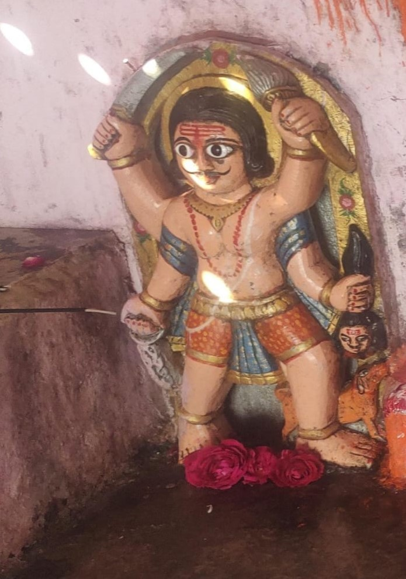

कुल देवता भेरू बावजी
(एक प्रतीक शक्ति और सुरक्षा का)
रियार बंधुओ की मंतना, भेरू बावजी की वंदना
भेरू बाऊजी, तेरे गुण गावे।
रियार बेटे, तेरी कथा सुनावे।।
तेरे भरोसे, सबका काज।
तेरे ही आस्रे, सबकी लाज ।।
भेरू बाऊजी, सब कुछ दिए।
तेरे कृपा से, हर पल जिए। ।
तेरे भरोसे, सबका काज।
तेरे ही आस्रे, सबकी लाज ।।
भेरू बाऊजी, ध्यान के लिए।
तेरे रुप , रस को पिए।।
तेरे भरोसे, सबका काज।
तेरे ही आस्रे, सबकी लाज ।।
भेरू बाऊजी, राह बतावे।
तेरे देवरे, हम सब आवे ।।
तेरे भरोसे, सबका काज।
तेरे ही आस्रे, सबकी लाज ।।
भेरू बाऊजी, तेरा देवरा सेवे।
तेरी महिमा, किस्सा सुनावे।।
तेरे भरोसे, सबका काज।
तेरे ही आस्रे, सबकी लाज ।।
भेरू बाऊजी, तेरी ज्योति जले।
तेरे गुण का, श्रवण मिले।।
तेरे भरोसे, सबका काज।
तेरे ही आस्रे, सबकी लाज ।।
भेरू बाऊजी, नाम का मान ।
तेरे आका, भभूति का पान।।
तेरे भरोसे, सबका काज।
तेरे ही आस्रे, सबकी लाज ।।
भेरू बाऊजी, तेरे गुण गावे।
रियार बेटे, तेरी कथा सुनावे।।
भेरू बावजी, की वंदना।
रियार बंधुओ, की मंतना।।
भेरू बावजी एक प्रमुख देवता हैं जिनकी पूजा राजस्थान मध्यप्रदेश और गुजरात के कुछ हिस्सों में की जाती है। वे एक लोक देवता हैं जिन्हें समाज में शांति और सुरक्षा के प्रतीक के रूप में पूजा जाता है। उनकी कहानी एक महान योद्धा और संत की है, जिन्होंने अपने समाज की रक्षा के लिए अपनी जान दे दी। उनकी शहादत के बाद, उन्हें देवता के रूप में पूजा जाने लगा।
हरतानिया रियार परिवार के भेरू बावजी जो मूलतः कोटडी (भीलवाड़ा) राजस्थान मे विराजमान है तथा मान्यता के अनुसार प्रथम जाया/पन्या का रतिजगा भेरू बावजी को कोटडी (भीलवाड़ा) राजस्थान मे हरतानिया रियार परिवार द्वारा पीढ़ियों से सदैव से दिया जाता रहा है। भेरू बावजी मनासा मे भी 1920-1930 के दशक ( लगभग 100 वर्षो) से मनासा हरतानिया रियार परिवार के बुलाने पर अपने वचन के अनुसार मनासा हरतानिया रियार परिवार के किसी सदस्य (भोपाजी) द्वारा भाव रूप मे आते रहे है तथा समय गति मे भाव//भक्ति के अनुसार हरतानिया रियार परिवार द्वारा उनका ज्योति स्वरूप उनकी अनुमति से पालना तलाई मनासा देवरे मे मूर्ति रूप मे सन् 2007 मे स्थापित किया गया है।
भेरू बावजी की पूजा करने वाले हरतानिया रियार परिवार के सदस्य उन्हें अपने कुल देवता मानते हैं और उनकी कृपा से अपने परिवार और समाज की सुरक्षा और समृद्धि की कामना करते हैं। उनकी पूजा करने वाले हरतानिया रियार परिवार के सदस्य उन्हें भोजन, फूल, और अन्य चीजें (परंपरागत) चढ़ाते हैं और उनकी पूजा करने के लिए नवरात्रि मे विशेष सामाजिक समारोह (विभिन्न देवी देवताओ का सयुक्त जलसा) तथा देवरे पर रातिजगा का आयोजित करते हैं।
भेरू बावजी की पूजा करने से हरतानिया रियार परिवार के सदस्यों को शांति, सुरक्षा, और समृद्धि की प्राप्ति होती है। वे अपने जीवन में सुख और समृद्धि की कामना करते हैं। भेरू बावजी एक प्रतीक हैं शक्ति और सुरक्षा का, और उनकी पूजा करने से रियार परिवार के सदस्यों को अपने जीवन में स्थिरता और सुरक्षा की भावना मिलती है।
चूंकि भेरू बावजी पिता तुल्य है अतः इनका स्नेह भाव हरतानिया रियार परिवार के सभी सदस्यो पर समान रूप से रहता रहा है। इस प्रकार परिवार का प्रत्येक सदस्य जिनमे परिवार की बहन- बेटियां तथा बहुए भी सम्मिलित है; निसंकोच अपना भाव//अभाव शुद्धि नियमो मे रहते हुए भेरू बावजी के सामने रख सकते है ; ऐसा बुजुर्गो का कहना है।
रातिजगा का महत्व:
रातिजगा एक महत्वपूर्ण परंपरा है जो रियार परिवार में पीढ़ियों से चलती आ रही है। इसका महत्व निम्नलिखित है:
- परिवार की एकता: रातिजगा परिवार के सदस्यों को एकत्रित करता है और उन्हें एक दूसरे के साथ जुड़ने का अवसर प्रदान करता है।
- भेरू बावजी की कृपा: रातिजगा भेरू बावजी की कृपा और आशीर्वाद प्राप्त करने का एक तरीका है, जो परिवार के सदस्यों के लिए शुभ माना जाता है।
- परंपरा का निर्वाह: रातिजगा परिवार की परंपरा को बनाए रखने में मदद करता है और नई पीढ़ियों को अपनी जड़ों से जोड़ता है।
- सामाजिक समर्थन: रातिजगा परिवार के सदस्यों को सामाजिक समर्थन और सहायता प्रदान करता है, खासकर जब वे कठिन समय से गुजर रहे हों।
- भक्ति और श्रद्धा: रातिजगा भेरू बावजी के प्रति भक्ति और श्रद्धा को दर्शाता है, जो परिवार के सदस्यों के लिए महत्वपूर्ण है।
इस प्रकार, रातिजगा रियार परिवार के लिए एक महत्वपूर्ण परंपरा है जो परिवार की एकता, भेरू बावजी की कृपा, परंपरा का निर्वाह, सामाजिक समर्थन, और भक्ति और श्रद्धा को बढ़ावा देती है।
सूरज की कलम से निरंतर
भाग - 2...